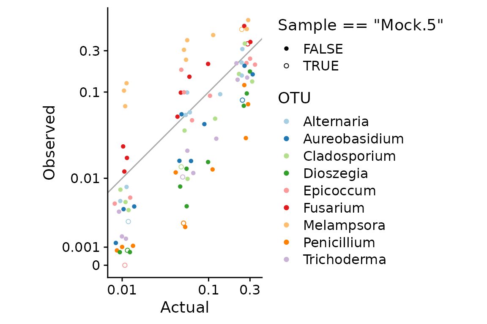
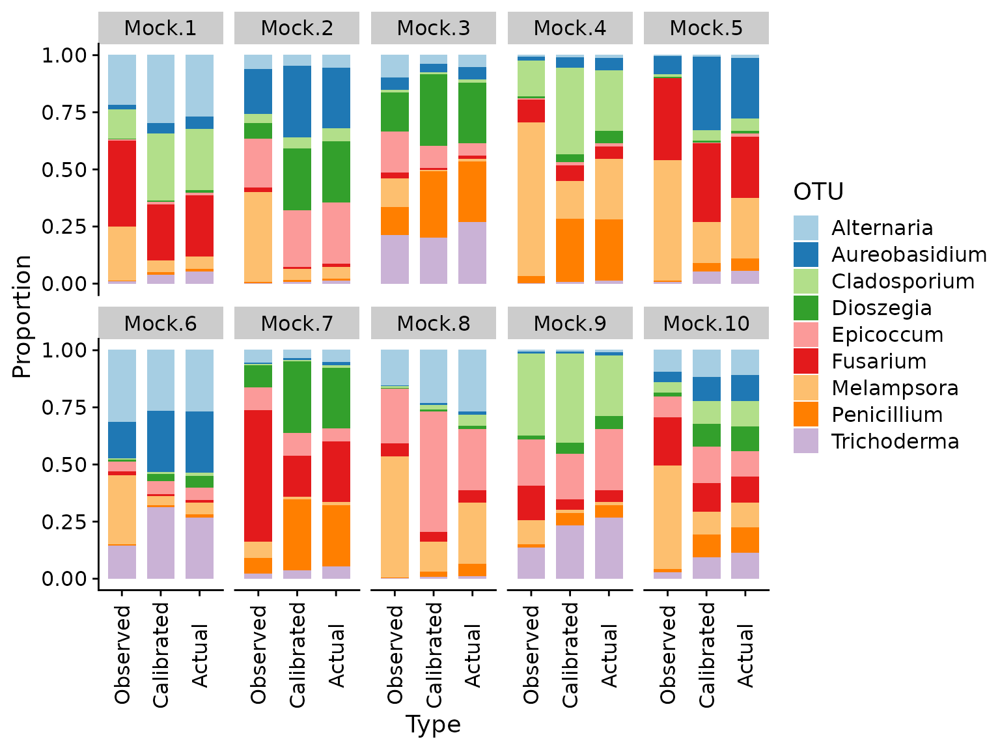

This tutorial illustrates the process of estimating bias from control samples using this estimate to calibrate the relative abundances of the control taxa in samples whose true composition is unknown. The data we use is from the synthetic-community colonization experiment of Leopold and Busby (2020).
Leopold DR, Busby PE. 2020. Host Genotype and Colonist Arrival Order Jointly Govern Plant Microbiome Composition and Function. Curr Biol 30:3260-3266.e5. doi:10.1016/j.cub.2020.06.011
These authors performed a colonization experiment in which black cottonwood (Populus trichocarpa) was inoculated with the fungal rust pathogen Melampsora × columbiana and 8 species of foliar fungi. Fungal relative abundances were measured using ITS amplicon sequencing. To enable quantification of bias due to PCR bias and variation in ITS copy number, they also created a set of DNA mocks of these fungi, which they measured along with the experimental samples. We will use the mock samples to estimate the bias of the 9 focal species, and then calibrate these species’ abundances in the full set of samples.
First, let’s set up our R environment. This tutorial uses phyloseq objects and functions to store and manipulate the microbiome data, tidyverse packages for data manipulation and plotting, and some add-ons to ggplot2 from the ggbeeswarm and cowplot packages.
# Tools for microbiome data library(phyloseq) # Tools for general purpose data manipulation and plotting library(tidyverse) #> ── Attaching packages ─────────────────────────────────────── tidyverse 1.3.0 ── #> ✔ ggplot2 3.3.2 ✔ purrr 0.3.4 #> ✔ tibble 3.0.3 ✔ dplyr 1.0.2 #> ✔ tidyr 1.1.2 ✔ stringr 1.4.0 #> ✔ readr 1.3.1 ✔ forcats 0.5.0 #> ── Conflicts ────────────────────────────────────────── tidyverse_conflicts() ── #> ✖ dplyr::filter() masks stats::filter() #> ✖ dplyr::lag() masks stats::lag() # ggplot helpers library(ggbeeswarm) library(cowplot) theme_set(theme_cowplot()) library(metacal); packageVersion("metacal") #> [1] '0.1.0.9011'
Next, we download the source data from Leopold and Busby (2020), which is available in Zenodo record 3872145. Set data_path to wherever you would like the data to be downloaded.
data_path <- here::here("dev", "data", "leopold2020") # To use a temporary directory: # data_path <- file.path(tempdir(), "leopold2020") if (!dir.exists(data_path)) { dir.create(data_path, recursive = TRUE) download.file( "https://zenodo.org/record/3872145/files/dleopold/Populus_priorityEffects-v1.2.zip", file.path(data_path, "Populus_priorityEffects-v1.2.zip") ) unzip( file.path(data_path, "Populus_priorityEffects-v1.2.zip"), exdir = data_path ) }
The microbiome data is stored in a phyloseq object,
ps <- file.path(data_path, "dleopold-Populus_priorityEffects-8594f7c/output/compiled/phy.rds") %>% readRDS %>% print #> phyloseq-class experiment-level object #> otu_table() OTU Table: [ 219 taxa and 567 samples ] #> sample_data() Sample Data: [ 567 samples by 16 sample variables ] #> tax_table() Taxonomy Table: [ 219 taxa by 7 taxonomic ranks ] #> refseq() DNAStringSet: [ 219 reference sequences ]
The (expected) actual compositions of the mock (control) samples can be computed from a csv file that contains the dilution factors used during sample construction. I will read in the csv file, convert it to a phyloseq object, and then compute the relative abundances of each species from the reciprocals of the dilution factors.
mock_actual <- file.path(data_path, "dleopold-Populus_priorityEffects-8594f7c/data/MockCommunities.csv") %>% read.csv(row.names = 1) %>% select(-Sym4) %>% as("matrix") %>% otu_table(taxa_are_rows = FALSE) %>% transform_sample_counts(function(x) close_elts(1 / x)) mock_taxa <- taxa_names(mock_actual)
Note, I have converted the actual relative abundances to proportions, but the observed abundances in the ps object have the form of read counts,
otu_table(ps) %>% prune_taxa(mock_taxa, .) %>% corner #> OTU Table: [5 taxa and 5 samples] #> taxa are columns #> Melampsora Dioszegia Epicoccum Fusarium Penicillium #> F1.Trichoderma 10 0 0 5 2 #> F2.Fusarium 7 0 0 23942 0 #> F3.Rust 13340 0 0 4 0 #> F4.Aureobasidium 20 7 0 5 0 #> F5.Epicoccum 7 0 7940 0 0
Let’s take a look at the sample data and taxonomy table in the phyloseq object,
sam <- sample_data(ps) %>% as("data.frame") %>% as_tibble(rownames = "Sample") tax <- tax_table(ps) %>% as("matrix") %>% as_tibble(rownames = "Taxon") sam %>% glimpse #> Rows: 567 #> Columns: 17 #> $ Sample <chr> "F1.Trichoderma", "F2.Fusarium", "F3.Rust", "F4.Aureoba… #> $ Plate.ID <chr> "PE-PL7", "PE-PL7", "PE-PL7", "PE-PL7", "PE-PL7", "PE-P… #> $ Row <chr> "C", "D", "E", "F", "G", "H", "A", "B", "C", "G", "B", … #> $ Col <int> 8, 8, 8, 8, 8, 8, 9, 9, 9, 12, 6, 3, 11, 8, 12, 4, 4, 1… #> $ Samp_type <chr> "Single", "Single", "Single", "Single", "Single", "Sing… #> $ BESC_Genotype <chr> NA, NA, NA, NA, NA, NA, NA, NA, NA, "VNDL-27-5", "VNDL-… #> $ Genotype <chr> NA, NA, NA, NA, NA, NA, NA, NA, NA, "West-7", "West-7",… #> $ Region <chr> NA, NA, NA, NA, NA, NA, NA, NA, NA, "West", "West", "We… #> $ Treatment <chr> NA, NA, NA, NA, NA, NA, NA, NA, NA, "Alternaria", "Alte… #> $ Replicate <chr> NA, NA, NA, NA, NA, NA, NA, NA, NA, "R1", "R1", "R2", "… #> $ Timepoint <int> NA, NA, NA, NA, NA, NA, NA, NA, NA, 1, 2, 1, 2, 1, 2, 1… #> $ PrimerPlate <chr> "ST2_7", "ST2_7", "ST2_7", "ST2_7", "ST2_7", "ST2_7", "… #> $ MID_fwd_i5 <chr> "TATAGCGC", "TATAGCGC", "ATCGGCAT", "ATCGGCAT", "ATCGGC… #> $ Name_fwd <chr> "P5-Hamady-nexF_0021", "P5-Hamady-nexF_0021", "P5-Hamad… #> $ MID.rev.i7 <chr> "TGACTGTG", "GTAGACCT", "GAGAGAGA", "TTCGTTCG", "TGACTG… #> $ MID.rev.i7.rc <chr> "CACAGTCA", "AGGTCTAC", "TCTCTCTC", "CGAACGAA", "CACAGT… #> $ Name.rev <chr> "P7-Hamady-nexR_0022", "P7-Hamady-nexR_0033", "P7-Hamad… sam %>% count(Samp_type) #> # A tibble: 3 x 2 #> Samp_type n #> <chr> <int> #> 1 Experiment 548 #> 2 Mock 10 #> 3 Single 9
The control samples are the 10 samples with Samp_type == "Mock".
Now let’s look at the taxonomy table,
tax %>% head #> # A tibble: 6 x 8 #> Taxon Kingdom Phylum Class Order Family Genus Species #> <chr> <chr> <chr> <chr> <chr> <chr> <chr> <chr> #> 1 OTU.1… k__Fungi p__Basidi… c__Agarico… o__Polyp… <NA> <NA> <NA> #> 2 OTU.1… k__Fungi p__Basidi… c__Agarico… o__Russu… f__Peniop… g__Peni… <NA> #> 3 OTU.1… k__Fungi p__Ascomy… c__Sordari… o__Xylar… <NA> <NA> <NA> #> 4 OTU.3… k__Fungi p__Basidi… c__Cystoba… o__Eryth… f__Erythr… g__Bann… s__ogasa… #> 5 OTU.59 k__Fungi p__Basidi… c__Tremell… o__Filob… f__Filoba… g__Filo… <NA> #> 6 OTU.1… k__Fungi p__Basidi… c__Tremell… o__Treme… f__Buller… g__Dios… <NA> tax %>% filter(Taxon %in% mock_taxa) %>% select(Taxon, Family:Species) #> # A tibble: 9 x 4 #> Taxon Family Genus Species #> <chr> <chr> <chr> <chr> #> 1 Melampsora f__Melampsoraceae g__Melampsora s__medusae #> 2 Aureobasidium f__Aureobasidiaceae <NA> <NA> #> 3 Trichoderma f__Hypocreaceae g__Trichoderma <NA> #> 4 Fusarium f__Nectriaceae g__Fusarium <NA> #> 5 Penicillium f__Aspergillaceae g__Penicillium s__bialowiezense #> 6 Alternaria f__Pleosporaceae g__Alternaria s__tenuissima #> 7 Cladosporium f__Mycosphaerellaceae g__Mycosphaerella s__tassiana #> 8 Dioszegia f__Bulleribasidiaceae g__Dioszegia s__butyracea #> 9 Epicoccum f__Didymellaceae g__Epicoccum s__dendrobii ntaxa(ps) #> [1] 219
There are 219 OTUs, of which 9 have been assigned to the mock taxa (the pathogen, here named “Melampsora”, and the 8 foliar fungi). The names of the mock taxa in ps have already been set to exactly match those in mock_actual, which is a requirement for the steps that follow.
To get a sense of how the mock mixtures were created, we can take a look at the expected proportions of the 9 taxa across the 10 samples,
mock_actual %>% psmelt %>% mutate( across(OTU, factor, levels = mock_taxa), across(Sample, factor, levels = sample_names(mock_actual)), ) %>% ggplot(aes(Sample, OTU, fill = Abundance)) + geom_tile() + scale_fill_viridis_c(trans = "log10", breaks = c(0.02, 0.05, 1e-1, 0.2)) + theme_cowplot(font_size = 11)
All taxa are in every sample, but in varying proportions that range from around 0.01 to 0.3.
To visualize and estimate bias, we’ll work with a phyloseq object of the observed compositions subset to just the mock community samples and taxa,
ps.mock <- ps %>% subset_samples(Samp_type == "Mock") %>% prune_taxa(mock_taxa, .)
Next, let’s compare the observed to actual taxon proportions in the mocks. I’ll first combine the observed and actual proportions in a data frame in “long” format,
props <- list(Actual = mock_actual, Observed = ps.mock) %>% map(transform_sample_counts, close_elts) %>% map_dfr(psmelt, .id = "Type") %>% select(Type, OTU, Sample, Abundance)
We can plot the observed vs. actual proportions with ggplot as follows,
brks <- c(0, 1e-3, 1e-2, 1e-1, 0.3) axes <- list( scale_y_continuous(trans = scales::pseudo_log_trans(1e-3), breaks = brks, labels = brks), scale_x_continuous(trans = scales::pseudo_log_trans(1e-3), breaks = brks, labels = brks), coord_fixed() ) props %>% pivot_wider(names_from = Type, values_from = Abundance) %>% ggplot(aes(Actual, Observed, color = OTU, shape = Sample == "Mock.5")) + geom_abline(color = "darkgrey") + geom_quasirandom() + axes + scale_shape_manual(values = c(16, 1)) + scale_color_brewer(type = "qual", palette = 3)

Some notes about this plot:
Axes transformations: The multiplicative error created by bias can only be easily seen for low-proportion taxa if we use some form of log transformation. Options to consider include a log (or log10) transformation, logit transformation, and a pseudo-log transformation (which is linear at low values and logarithmic at higher values). Here I will use the pseudo-log transform since it can more easily handle any 0s that happen to be in the data than these other transforms. I set 1e-3 as the linear-to-log transition point; you should play around with this value with your own data. Note the use of pseudo-log-transformed axes. I will saved these axes transformations in a list (allow with coord_fixed()) so that we can reuse them with other plots.
Because the actual proportions are clustered at just 4 values, I used geom_quasirandom() from the ggbeeswarm package to jitter the points.
I have highlighted the sample Mock.5 as it was identified as an outlier by Leopold2020. It is the only sample where a taxon (Epicoccum) was undetected in a sample where it should have been present (the point at (0.01, 0)). Other than this non-detection, the observations of this sample seem in line with the others. I will include this sample in this tutorial, but we need to be aware that how we deal with this zero value may have undue influence on our bias estimate.
Metacal provides a high-level interface to estimating bias, estimate_bias(), which expect two matrices or phyloseq objects with the observed and actual abundances for a set of control samples. To obtain sensible estimates using this function, we must first ensure that all taxa have an observed abundance that is greater than 0 in samples where their actual abundance is greater than 0. We will therefore use add a pseudocount of 1 to the observed counts to remove 0s; other zero-replacement methods, such as cmultRepl() from zCompositions, would also work. The estimation method used by estimate_bias() also requires that taxa not supposed to be in a sample have an abundance of exactly 0, but the estimate_bias() function will automatically zero-out these observations for you.
sum(otu_table(ps.mock) == 0) #> [1] 1 ps.mock.pseudo <- ps.mock %>% transform_sample_counts(function(x) x + 1) all(otu_table(ps.mock.pseudo) > 0) #> [1] TRUE
Now we can estimate bias using ps.mock.pseudo as our observed abundances. We use the boot = TRUE option to also generate bootstrap replicates that will give us a way to quantify the uncertainty in our estimate.
mc_fit <- estimate_bias(ps.mock.pseudo, mock_actual, boot = TRUE) %>% print #> A metacal bias fit. #> #> Estimated relative efficiencies: #> Melampsora Dioszegia Epicoccum Fusarium Penicillium #> 8.7486819 0.2947290 1.0064648 3.0660596 0.2233792 #> Cladosporium Trichoderma Alternaria Aureobasidium #> 0.8988898 0.5776648 1.4679841 0.7380894 #> #> Contains 1000 bootstrap replicates. class(mc_fit) #> [1] "mc_bias_fit"
estimate_bias() returns an “mc_bias_fit” object that can be interacted with through commonly used S3 methods such as print(), summary(), and coef(). The bias estimate can be extracted with coef(),
bias <- coef(mc_fit) %>% print #> Melampsora Dioszegia Epicoccum Fusarium Penicillium #> 8.7486819 0.2947290 1.0064648 3.0660596 0.2233792 #> Cladosporium Trichoderma Alternaria Aureobasidium #> 0.8988898 0.5776648 1.4679841 0.7380894
The summary() method uses the bootstrap replicates in the “mc_bias_fit” object to estimate the (geometric) standard error of the bias estimate,
mc_fit.summary <- summary(mc_fit) print(mc_fit.summary) #> Summary of a metacal bias fit. #> #> Estimated relative efficiencies: #> # A tibble: 9 x 4 #> taxon estimate gm_mean gm_se #> <chr> <dbl> <dbl> <dbl> #> 1 Melampsora 8.75 8.76 1.06 #> 2 Dioszegia 0.295 0.297 1.10 #> 3 Epicoccum 1.01 0.994 1.54 #> 4 Fusarium 3.07 3.06 1.15 #> 5 Penicillium 0.223 0.224 1.09 #> 6 Cladosporium 0.899 0.894 1.14 #> 7 Trichoderma 0.578 0.579 1.09 #> 8 Alternaria 1.47 1.47 1.08 #> 9 Aureobasidium 0.738 0.743 1.13 #> #> Geometric standard error estimated from 1000 bootstrap replicates.
producing a data frame with the estimate and standard error that can be accessed with
coef_tb <- mc_fit.summary$coefficients
Let’s use this data frame to plot the bias estimate with two geometric standard errors,
coef_tb %>% mutate(taxon = fct_reorder(taxon, estimate)) %>% ggplot(aes(taxon, estimate, ymin = estimate / gm_se^2, ymax = estimate * gm_se^2)) + geom_hline(yintercept = 1, color = "grey") + geom_pointrange() + scale_y_log10() + coord_flip()
This plot shows that these estimates are consistent but not identical with those in Leopold2020 Fig S2. The difference is due to our inclusion of the Mock.5 sample, which leads to a lower point estimate and larger standard error for Epicoccum.
The fitted values of the model can be accessed with fitted(); these are the proportions that we predict we’d observe for the control samples given the actual proportions and the estimated bias. The fitted() function returns a matrix with samples as rows and taxa as columns, which I’ll convert into a phyloseq object.
To plot the fitted values against the observed values, I’ll add the fitted proportions to our earlier props data frame,
props.fitted <- bind_rows( props, psmelt(observed.fitted) %>% add_column(Type = "Fitted") )
Next, I’ll use some tidyr manipulations and ggplot to plot the observed proportions vs. the actual and fitted predictions,
props.fitted %>% pivot_wider(names_from = Type, values_from = Abundance) %>% pivot_longer(c(Fitted, Actual), names_to = "Type", values_to = "Predicted") %>% ggplot(aes(Predicted, Observed, color = OTU)) + geom_abline(color = "darkgrey") + geom_point() + axes + facet_wrap(~Type) + scale_color_brewer(type = "qual", palette = 3)
This plot shows that the fitted model is doing a good job of explaining the error across the full range of predicted proportions, though it is systematically underpredicting the observed relative abundances at the lowest values.
Now we can use the estimated bias to calibrate the relative abundances of the mock taxa in all samples. Metacal provides the calibrate() function for this purpose, which takes as its arguments the observed compositions and the bias estimate returned by coef(mc_fit).
There are a few things to keep in mind about calibrate().
Because of the relative nature of microbiome measurement and the metacal bias estimate, it is only possible to calibrate the relative abundances of the taxa whose bias has been estimated. For this reason, calibrate() automatically drops taxa that are missing from the bias estimate.
A deterministic calibration method is used in which the observed abundances are simply divided by the bias and (optionally) normalized to sum to 1. Uncertainty in the bias estimate and in the observed abundances due to the noise inherent in microbiome measurement (such as random sampling of sequencing reads) is not accounted for.
An implication is that taxa whose observed abundance is 0 will have a calibrated abundance of 0. Whether and how you replace 0s prior to calibration may have a significant impact on downstream analyses.
Here I will use a pseudocount to make all the taxa abundances positive prior to calibration.
ps.pseudo <- transform_sample_counts(ps, function(x) x + 1) ps.pseudo.cal <- calibrate(ps.pseudo, bias) %>% print #> phyloseq-class experiment-level object #> otu_table() OTU Table: [ 9 taxa and 567 samples ] #> sample_data() Sample Data: [ 567 samples by 16 sample variables ] #> tax_table() Taxonomy Table: [ 9 taxa by 7 taxonomic ranks ] #> refseq() DNAStringSet: [ 9 reference sequences ]
To verify calibration that worked as expected, let’s compare the observed, calibrated, and actual taxon proportions in the 10 control samples. Again, I’ll start by adding the calibrated proportions to the data frame with observed and actual proportions,
ps.pseudo.cal.mock <- ps.pseudo.cal %>% subset_samples(Samp_type == "Mock") props.cal <- bind_rows( props, psmelt(ps.pseudo.cal.mock) %>% add_column(Type = "Calibrated") ) %>% select(Type, OTU, Sample, Abundance)
First, let’s look at bar plots comparing the observed, calibrated, and actual compositions,
props.cal %>% mutate( across(Type, fct_rev), across(Sample, factor, levels = sample_names(mock_actual)), ) %>% rename(Proportion = Abundance) %>% ggplot(aes(Type, Proportion, fill = OTU)) + geom_col(width = 0.7) + scale_fill_brewer(type = "qual", palette = 3) + facet_wrap(~Sample, ncol = 5) + theme( axis.text.x = element_text(angle = 90, vjust = 0.5) )

We can see that the calibrated compositions are typically substantially closer to the actual proportions than the original observations. We can also plot the calibrated vs. actual (pseudo-log-transformed) proportions and compare to the earlier plot of observed vs. actual.
props.cal %>% pivot_wider(names_from = Type, values_from = Abundance) %>% pivot_longer(c(Observed, Calibrated), names_to = "Type", values_to = "Proportion") %>% mutate(across(Type, fct_relevel, "Observed")) %>% ggplot(aes(Actual, Proportion, color = OTU)) + geom_abline(color = "darkgrey") + geom_quasirandom() + facet_wrap(~Type) + axes + scale_color_brewer(type = "qual", palette = 3)
This plot has essentially same information as the earlier plot examining the model fit, but seen from a slightly different angle. We can see that calibration in this dataset clearly reduces the relative error in proportions across the full range of tested true proportions, but leads to estimates that are systematically too low at low proportions by a small factor.
sessioninfo::session_info() #> ─ Session info ─────────────────────────────────────────────────────────────── #> setting value #> version R version 4.0.3 (2020-10-10) #> os Arch Linux #> system x86_64, linux-gnu #> ui X11 #> language (EN) #> collate en_US.UTF-8 #> ctype en_US.UTF-8 #> tz America/New_York #> date 2020-10-21 #> #> ─ Packages ─────────────────────────────────────────────────────────────────── #> package * version date lib source #> ade4 1.7-15 2020-02-13 [2] CRAN (R 4.0.0) #> ape 5.4-1 2020-08-13 [2] CRAN (R 4.0.2) #> assertthat 0.2.1 2019-03-21 [2] CRAN (R 4.0.0) #> backports 1.1.10 2020-09-15 [2] CRAN (R 4.0.2) #> beeswarm 0.2.3 2016-04-25 [2] CRAN (R 4.0.0) #> Biobase 2.48.0 2020-04-27 [2] Bioconductor #> BiocGenerics 0.34.0 2020-04-27 [2] Bioconductor #> biomformat 1.16.0 2020-04-27 [2] Bioconductor #> Biostrings 2.56.0 2020-04-27 [2] Bioconductor #> blob 1.2.1 2020-01-20 [2] CRAN (R 4.0.0) #> broom 0.7.1 2020-10-02 [2] CRAN (R 4.0.2) #> cellranger 1.1.0 2016-07-27 [2] CRAN (R 4.0.0) #> cli 2.0.2 2020-02-28 [2] CRAN (R 4.0.2) #> cluster 2.1.0 2019-06-19 [3] CRAN (R 4.0.3) #> codetools 0.2-16 2018-12-24 [3] CRAN (R 4.0.3) #> colorspace 1.4-1 2019-03-18 [2] CRAN (R 4.0.0) #> cowplot * 1.1.0 2020-09-08 [2] CRAN (R 4.0.2) #> crayon 1.3.4 2017-09-16 [2] CRAN (R 4.0.0) #> data.table 1.13.0 2020-07-24 [2] CRAN (R 4.0.2) #> DBI 1.1.0 2019-12-15 [2] CRAN (R 4.0.0) #> dbplyr 1.4.4 2020-05-27 [2] CRAN (R 4.0.0) #> desc 1.2.0 2018-05-01 [2] CRAN (R 4.0.0) #> digest 0.6.25 2020-02-23 [2] CRAN (R 4.0.0) #> dplyr * 1.0.2 2020-08-18 [2] CRAN (R 4.0.2) #> ellipsis 0.3.1 2020-05-15 [2] CRAN (R 4.0.0) #> evaluate 0.14 2019-05-28 [2] CRAN (R 4.0.0) #> fansi 0.4.1 2020-01-08 [2] CRAN (R 4.0.0) #> farver 2.0.3 2020-01-16 [2] CRAN (R 4.0.0) #> forcats * 0.5.0 2020-03-01 [2] CRAN (R 4.0.0) #> foreach 1.5.0 2020-03-30 [2] CRAN (R 4.0.2) #> fs 1.5.0 2020-07-31 [2] CRAN (R 4.0.2) #> generics 0.0.2 2018-11-29 [2] CRAN (R 4.0.0) #> ggbeeswarm * 0.6.0 2017-08-07 [2] CRAN (R 4.0.0) #> ggplot2 * 3.3.2 2020-06-19 [2] CRAN (R 4.0.1) #> glue 1.4.2 2020-08-27 [2] CRAN (R 4.0.2) #> gtable 0.3.0 2019-03-25 [2] CRAN (R 4.0.0) #> haven 2.3.1 2020-06-01 [2] CRAN (R 4.0.1) #> here 0.1 2017-05-28 [2] CRAN (R 4.0.0) #> hms 0.5.3 2020-01-08 [2] CRAN (R 4.0.0) #> htmltools 0.5.0 2020-06-16 [2] CRAN (R 4.0.1) #> httr 1.4.2 2020-07-20 [2] CRAN (R 4.0.2) #> igraph 1.2.5 2020-03-19 [2] CRAN (R 4.0.0) #> IRanges 2.22.2 2020-05-21 [2] Bioconductor #> iterators 1.0.12 2019-07-26 [2] CRAN (R 4.0.0) #> jsonlite 1.7.1 2020-09-07 [2] CRAN (R 4.0.2) #> knitr 1.30 2020-09-22 [2] CRAN (R 4.0.2) #> labeling 0.3 2014-08-23 [2] CRAN (R 4.0.0) #> lattice 0.20-41 2020-04-02 [3] CRAN (R 4.0.3) #> lifecycle 0.2.0 2020-03-06 [2] CRAN (R 4.0.0) #> lubridate 1.7.9 2020-06-08 [2] CRAN (R 4.0.1) #> magrittr 1.5 2014-11-22 [2] CRAN (R 4.0.0) #> MASS 7.3-53 2020-09-09 [3] CRAN (R 4.0.3) #> Matrix 1.2-18 2019-11-27 [3] CRAN (R 4.0.3) #> memoise 1.1.0 2017-04-21 [2] CRAN (R 4.0.0) #> metacal * 0.1.0.9011 2020-10-21 [1] local #> mgcv 1.8-33 2020-08-27 [3] CRAN (R 4.0.3) #> modelr 0.1.8 2020-05-19 [2] CRAN (R 4.0.0) #> multtest 2.44.0 2020-04-27 [2] Bioconductor #> munsell 0.5.0 2018-06-12 [2] CRAN (R 4.0.0) #> nlme 3.1-149 2020-08-23 [3] CRAN (R 4.0.3) #> permute 0.9-5 2019-03-12 [2] CRAN (R 4.0.0) #> phyloseq * 1.32.0 2020-04-27 [2] Bioconductor #> pillar 1.4.6 2020-07-10 [2] CRAN (R 4.0.2) #> pkgconfig 2.0.3 2019-09-22 [2] CRAN (R 4.0.0) #> pkgdown 1.6.1 2020-09-12 [2] CRAN (R 4.0.2) #> plyr 1.8.6 2020-03-03 [2] CRAN (R 4.0.0) #> purrr * 0.3.4 2020-04-17 [2] CRAN (R 4.0.0) #> R6 2.4.1 2019-11-12 [2] CRAN (R 4.0.0) #> ragg 0.3.1 2020-07-03 [2] CRAN (R 4.0.2) #> RColorBrewer 1.1-2 2014-12-07 [2] CRAN (R 4.0.0) #> Rcpp 1.0.5 2020-07-06 [2] CRAN (R 4.0.2) #> readr * 1.3.1 2018-12-21 [2] CRAN (R 4.0.0) #> readxl 1.3.1 2019-03-13 [2] CRAN (R 4.0.0) #> reprex 0.3.0 2019-05-16 [2] CRAN (R 4.0.1) #> reshape2 1.4.4 2020-04-09 [2] CRAN (R 4.0.0) #> rhdf5 2.32.2 2020-07-03 [2] Bioconductor #> Rhdf5lib 1.10.1 2020-07-09 [2] Bioconductor #> rlang 0.4.7 2020-07-09 [2] CRAN (R 4.0.2) #> rmarkdown 2.4 2020-09-30 [2] CRAN (R 4.0.2) #> rprojroot 1.3-2 2018-01-03 [2] CRAN (R 4.0.0) #> rstudioapi 0.11 2020-02-07 [2] CRAN (R 4.0.0) #> rvest 0.3.6 2020-07-25 [2] CRAN (R 4.0.2) #> S4Vectors 0.26.1 2020-05-16 [2] Bioconductor #> scales 1.1.1 2020-05-11 [2] CRAN (R 4.0.0) #> sessioninfo 1.1.1 2018-11-05 [2] CRAN (R 4.0.0) #> stringi 1.5.3 2020-09-09 [2] CRAN (R 4.0.2) #> stringr * 1.4.0 2019-02-10 [2] CRAN (R 4.0.0) #> survival 3.2-7 2020-09-28 [3] CRAN (R 4.0.3) #> systemfonts 0.3.2 2020-09-29 [2] CRAN (R 4.0.2) #> tibble * 3.0.3 2020-07-10 [2] CRAN (R 4.0.2) #> tidyr * 1.1.2 2020-08-27 [2] CRAN (R 4.0.2) #> tidyselect 1.1.0 2020-05-11 [2] CRAN (R 4.0.0) #> tidyverse * 1.3.0 2019-11-21 [2] CRAN (R 4.0.0) #> useful 1.2.6 2018-10-08 [2] CRAN (R 4.0.0) #> utf8 1.1.4 2018-05-24 [2] CRAN (R 4.0.0) #> vctrs 0.3.4 2020-08-29 [2] CRAN (R 4.0.2) #> vegan 2.5-6 2019-09-01 [2] CRAN (R 4.0.0) #> vipor 0.4.5 2017-03-22 [2] CRAN (R 4.0.0) #> viridisLite 0.3.0 2018-02-01 [2] CRAN (R 4.0.0) #> withr 2.3.0 2020-09-22 [2] CRAN (R 4.0.2) #> xfun 0.18 2020-09-29 [2] CRAN (R 4.0.2) #> xml2 1.3.2 2020-04-23 [2] CRAN (R 4.0.0) #> XVector 0.28.0 2020-04-27 [2] Bioconductor #> yaml 2.2.1 2020-02-01 [2] CRAN (R 4.0.0) #> zlibbioc 1.34.0 2020-04-27 [2] Bioconductor #> #> [1] /tmp/RtmppncHeN/temp_libpath18eca245f54b6 #> [2] /home/michael/R/x86_64-pc-linux-gnu-library/4.0 #> [3] /usr/lib/R/library